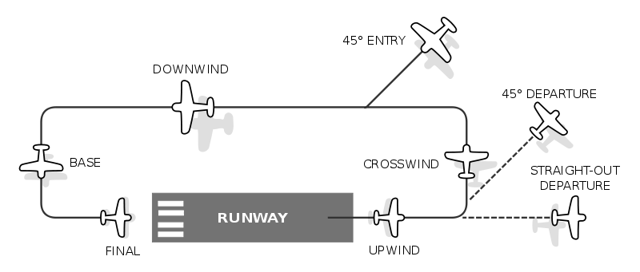

1) Pré-vol
- A. Préparation de vol & Checklist
- Préparation
- Checklist
- B. Radios / infos
- ATIS (si dispo) → QNH, piste en service, vent.
- Ground (ou CTAF si non contrôlé) → taxi.
- Tower → décollage.
- C. Instruments
- Compas magnétique (au pare-brise) → Sert à vérifier / recaler. Pas à piloter au cap (trop d’erreurs/oscillations).
- Heading Indicator / DG (rose “VACUUM”) → C’est l'instrument principal pour tenir un cap.
- GPS → Cross-check seulement (TRK). A utiliser pour confirmer la route.
- Altimètre → calé au QNH, cross-check terrain connu.
- D. Calage DG
- S'aligner sur l’axe de piste.
- Régler le DG sur le cap magnétique publié de la piste (ex : si RWY 35 = 352°M → DG = 352).
2) Décollage & sortie du circuit
- A. Après rotation : priorités
- Axe → vitesse → montée → scan trafic
- Pas de gros virage immédiat “plein cap destination”
- B. Quand prendre le cap navigation ?
Règle simple :
- Monter d’abord vers l’altitude du traffic pattern (~1000 ft AGL)
- Quitter le circuit proprement
- Ensuite seulement : cap navigation
Repère pratique :
Souvent ~2 à 3 minutes après décollage (selon avion / taux de montée / vent)
et quand le terrain est clairement derrière
Souvent ~2 à 3 minutes après décollage (selon avion / taux de montée / vent)
et quand le terrain est clairement derrière
- C. Sortie du circuit : straight-out ou 45°
- Straight-out : continuer dans l’axe, cap navigation pris plus tard
- Sortie 45° : très “école US”, toujours côté crosswind
Règle d’or : on sort toujours à l’opposé du downwind
Left traffic → sortie à droite
Right traffic → sortie à gauche
Left traffic → sortie à droite
Right traffic → sortie à gauche
3) Altitudes VFR
- Règle des altitudes VFR
- La règle “pair / impair + 500” est obligatoire au-dessus de 3000 ft AGL Cap 000°–179° → Impair + 500 ft & Cap 180°–359° → Pair + 500 ft
- En dessous : choix d’une altitude pratique (trafic / espace aérien / confort)
Pour un trajet court et “dense” : 2500 ft est très réaliste
Pourquoi +500 ft en VFR ?
IFR : niveaux “ronds” (4000, 6000, 8000…)
VFR : niveaux décalés de +500 ft
→ Cela crée une séparation verticale naturelle entre VFR et IFR
IFR : niveaux “ronds” (4000, 6000, 8000…)
VFR : niveaux décalés de +500 ft
→ Cela crée une séparation verticale naturelle entre VFR et IFR
- À l’arrivée
- Viser l’altitude du circuit ~1000 ft AGL
5) Correction de vent (AVEC / SANS GPS)
- Instruments utilisés
- DG pour tenir le cap
- Carte + repères visuels
- Chrono
- (Altimètre + IAS + trim pour rester stable)
- Procédure standard
- Stabiliser : 2500 ft, vitesse de croisière, trim OK
- Choisir un repère lointain aligné sur la route (idéalement 5–10 NM devant)
- Tenir le cap 1 à 2 minutes sans toucher
-
Observer le repère :
- Repère qui glisse à droite → dérive à gauche → ajouter 2–3° à droite
- Repère qui glisse à gauche → dérive à droite → ajouter 2–3° à gauche
- Attendre encore 1–2 minutes, ré-évaluer, ré-ajuster par petits pas
Quand le repère reste fixe : correction correcte
Crabe stable accepté : c’est exactement ce qu’on veut
- Méthode “double-angle”
- Si tu dois tourner de X° pour revenir sur la route,
- alors tu gardes environ 2X° comme correction de maintien
- Méthode avec GPS
- Le GPS est utilisé uniquement en vérification
- Route prévue (course) : par ex. 004°M
- Le GPS affiche : TRK
- Ajuster le HDG pour ramener le TRK vers la course
- Règle de correction cockpit
- Erreur 5–10° → changer le heading de 2–3°
- Erreur ~15° → changer le heading de 5°
- Attendre 30–60 s entre chaque correction (sinon zigzag)
GPS = aide à la décision
6) Approche
- A. 10–15 NM avant
- ATIS
- Contact : “inbound full stop”
- Descente planifiée pour arriver à 1000 ft AGL
- B. Intégration pattern
- Exemple : KTIW RWY 35 : RIGHT traffic
- Downwind à droite de la piste
- Base à droite, etc.
- Intégration standard : entrée 45° sur la downwind du bon côté (côté droit pour RWY 35)
- C. Atterrissage & taxi
- Finale, atterrissage
- Sortie de piste
- Contact Ground (si contrôlé)
